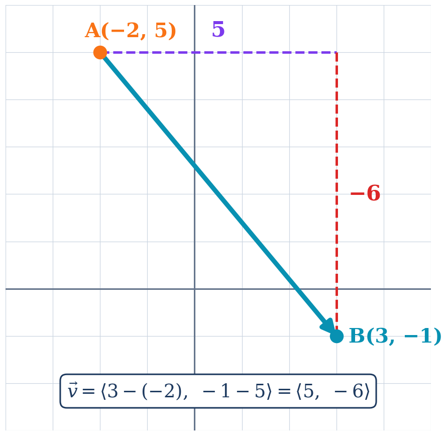
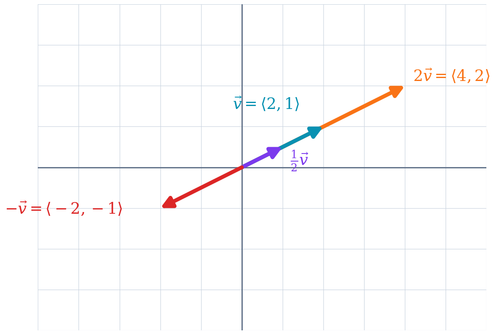
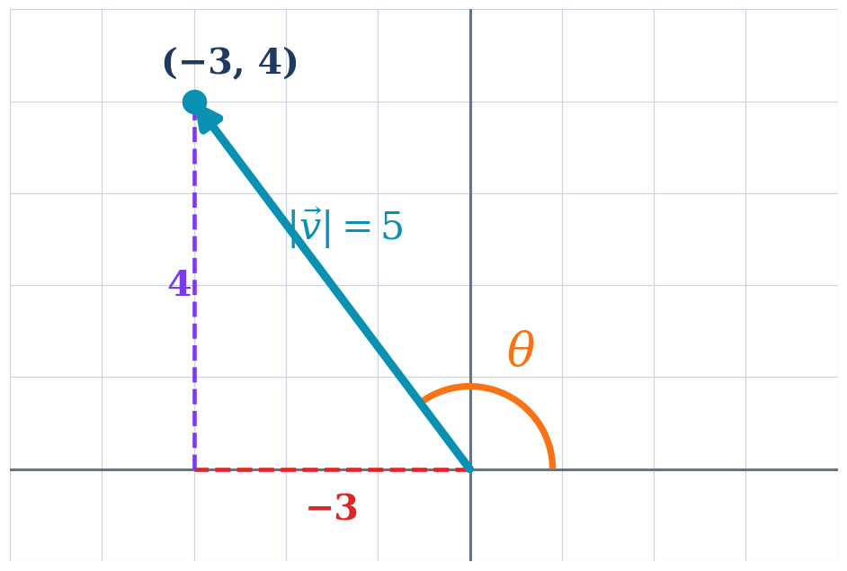

MATH 130 · Module 13
Vectors
Concepts, worked examples, student practice, and synthesis
55 minutes · Offline capable
Today’s Learning Roadmap
- 1
represent vectors in component form
- 2
perform vector operations and interpret scalar multiplication
- 3
find vector magnitude and direction angle
Activate · 0.5 minSource: 1
Predict: represent vectors in component form
Predict firstWhat information does speed omit that velocity includes?
Commit to a response before discussion.
Activate · 1.0 minSource: Authored
represent vectors in component form
Concept- A vector has magnitude and direction.
- $\vec v=\langle x_2-x_1,y_2-y_1\rangle$.
- From magnitude and direction: $\langle |v|\cos\theta,|v|\sin\theta\rangle$.
Explain · 2.5 minSource: 2
Model the Skill: represent vectors in component form
Annotated diagram- Find the vector from $A=(-2,5)$ to $B=(3,-1)$.
- Terminal minus initial gives $\langle3-(-2),-1-5\rangle$.
- $\vec v=\langle5,-6\rangle$.
- The corrected diagram moves 5 right and 6 down.

Vector from A negative two comma five to B three comma negative one with components five and negative sixModel · 3.0 minSource: 3
You Try: represent vectors in component form
Student practiceFind the component form from $P=(-4,-2)$ to $Q=(2,1)$.
Feedback and solution$\langle6,3\rangle$.
Practice · 3.0 minSource: 4
Check and Diagnose: represent vectors in component form
Error analysis- Use terminal minus initial.
- Component form describes displacement, not location.
Self-checkWhat evidence confirms the setup, sign, unit, or magnitude?
Feedback · 2.0 minSource: 5
Pacing checkpointMake It Stick: represent vectors in component form
Explain both ways to obtain vector components.
Exit responseAnswer in complete mathematical sentences and identify one remaining question.
Synthesize · 0.5 minSource: 6
Predict: perform vector operations and interpret scalar multiplication
Predict firstWhat changes when a vector is multiplied by a negative scalar?
Commit to a response before discussion.
Activate · 1.0 minSource: Authored
perform vector operations and interpret scalar multiplication
Concept- Add and subtract component-wise.
- $k\langle a,b\rangle=\langle ka,kb\rangle$.
- A negative scalar reverses direction.
Explain · 2.5 minSource: 7
Model the Skill: perform vector operations and interpret scalar multiplication
Annotated diagram- For $u=\langle3,-2\rangle$ and $v=\langle-1,5\rangle$, find $u+v$ and $3u-2v$.
- $u+v=\langle2,3\rangle$.
- $3u-2v=\langle9,-6\rangle-\langle-2,10\rangle=\langle11,-16\rangle$.
- The diagram separately confirms stretching and reversal under scalar multiplication.

Vectors v, two v, and negative v showing stretch and reversalModel · 3.0 minSource: Authored
You Try: perform vector operations and interpret scalar multiplication
Student practiceLet $u=\langle2,-3\rangle$ and $v=\langle-1,4\rangle$. Find $2u-3v$.
Feedback and solution$2u-3v=\langle7,-18\rangle$.
Practice · 3.0 minSource: 11
Check and Diagnose: perform vector operations and interpret scalar multiplication
Error analysis- Distribute the scalar to both components.
- Check the direction of negative scalar multiples visually.
Self-checkWhat evidence confirms the setup, sign, unit, or magnitude?
Feedback · 2.0 minSource: Authored
Pacing checkpointMake It Stick: perform vector operations and interpret scalar multiplication
Describe how scalar sign and magnitude affect a vector.
Exit responseAnswer in complete mathematical sentences and identify one remaining question.
Synthesize · 0.5 minSource: Authored
Predict: find vector magnitude and direction angle
Predict firstWhy can a calculator’s inverse tangent answer require a quadrant adjustment?
Commit to a response before discussion.
Activate · 1.0 minSource: Authored
find vector magnitude and direction angle
Concept- Magnitude: $|v|=\sqrt{a^2+b^2}$.
- Use atan2 behavior conceptually: choose the angle in the vector’s actual quadrant.
Explain · 2.5 minSource: 8, 9
Model the Skill: find vector magnitude and direction angle
Annotated diagram- For $v=\langle-3,4\rangle$, find magnitude and direction.
- $|v|=\sqrt{(-3)^2+4^2}=5$.
- The reference angle is $\tan^{-1}(4/3)\approx53.13^\circ$.
- Quadrant II gives $\theta=180^\circ-53.13^\circ\approx126.87^\circ$.

Quadrant two vector with direction angle measured counterclockwise from the positive x-axisModel · 3.0 minSource: 10
You Try: find vector magnitude and direction angle
Student practiceFor $v=\langle6,3\rangle$, find magnitude and direction.
Feedback and solution$|v|=3\sqrt5\approx6.71$ and $\theta\approx26.57^\circ$.
Practice · 3.0 minSource: 12
Check and Diagnose: find vector magnitude and direction angle
Error analysis- Check component signs before adjusting the angle.
- Direction is measured counterclockwise from the positive x-axis.
Self-checkWhat evidence confirms the setup, sign, unit, or magnitude?
Feedback · 2.0 minSource: 13
Pacing checkpointMake It Stick: find vector magnitude and direction angle
Write a quadrant-safe direction-angle procedure.
Exit responseAnswer in complete mathematical sentences and identify one remaining question.
Synthesize · 0.5 minSource: 14
Session Summary and Exit Ticket
- State the most important idea from today without looking at your notes.
- Complete one representative setup and identify the step most likely to cause an error.
- Write one question that should be answered before the next assessment.
Exit responseAnswer in complete mathematical sentences and identify one remaining question.
Feedback and solutionUse the objective roadmap to identify any skill that still needs deliberate practice.
Synthesize · 1.5 minSource: Authored